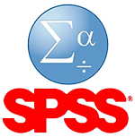
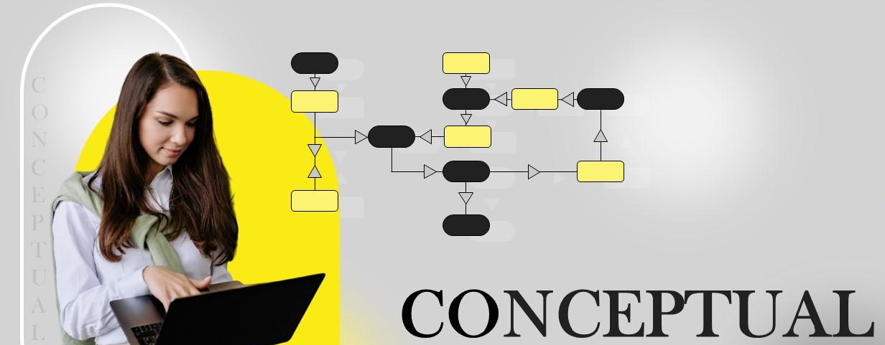
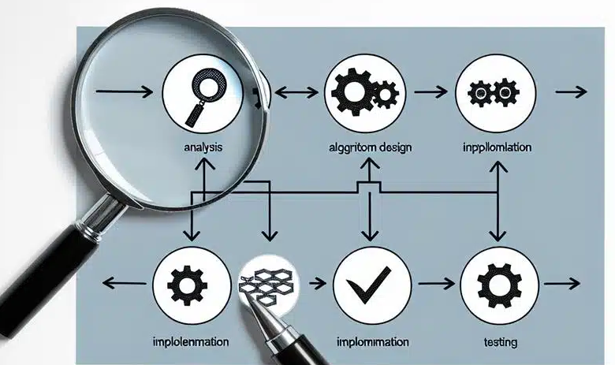
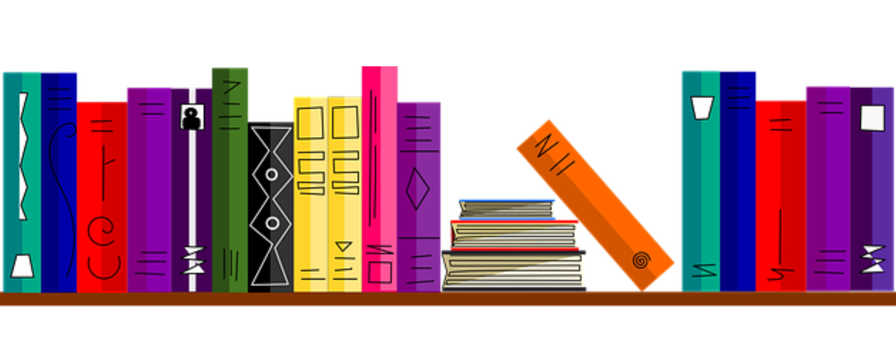

Tools & Research Resources
Integrated software, methodologies, and indexed platforms powering high-quality academic research
- Statistical & Programming Tools
- Methodology & Framework Design
- Literature & Review Resources
- Journals & Indexing Databases
- Data Collection & Analytics
Statistical Software & Programming
Advanced analytical tools supporting empirical research, modeling, and data-driven decision making
-

SPSS (v29.0) Statistical analysis & predictive analyticsIBM SPSS Statistics v29 offers powerful statistical analysis, predictive analytics, and data visualization capabilities for academic and corporate research.
- Advanced statistical modeling & hypothesis testing
- Machine learning & predictive analytics
- Handling large-scale datasets efficiently
- Automated reporting & interactive dashboards
-
AMOS (v29.0) Structural Equation Modeling (SEM)
IBM SPSS AMOS v29 (Analysis of Moment Structures) is a leading tool for structural equation modeling with an intuitive graphical interface.
- Confirmatory Factor Analysis (CFA)
- Path analysis & multigroup analysis
- Model fit evaluation (CFI, RMSEA, GFI)
- Accurate SEM reporting & validation
-
 Python Data science & machine learning
Python Data science & machine learningPython is the backbone of modern data science, widely used for analytics, machine learning, and artificial intelligence research.
- NumPy & Pandas for data analysis
- Matplotlib for visualization
- Scikit-learn for machine learning
- Open-source ecosystem with global support
-
 R Program Statistical computing & visualization
R Program Statistical computing & visualizationR is a language designed specifically for statistical computing, predictive modeling, and academic research visualization.
- Regression & hypothesis testing
- Predictive & statistical modeling
- ggplot2 for advanced visualizations
- dplyr for efficient data manipulation
-
STATA Econometrics & research modeling
STATA is an advanced research and data modeling software used for quantitative analysis, survey evaluation, and evidence-based research.
- Econometric & panel data analysis
- Structural equation & risk modeling
- Survey data evaluation
- Policy & decision-support research
Purpose: Robust statistical modeling, theory validation, and reproducible research outcomes
Methodology & Conceptual Framework
Systematic research design, theoretical grounding, and methodological rigor for high-impact scholarly studies
-
Research Design Quantitative, Qualitative & Mixed Methods
Research design defines the overall strategy for data collection, measurement, and analysis to address research questions with scientific validity.
- Quantitative designs (survey, experimental, correlational)
- Qualitative approaches (interviews, case studies, thematic analysis)
- Mixed-method integration for robust findings
- Alignment with research objectives and hypotheses
-

Conceptual Framework Theoretical model & variable relationshipsConceptual frameworks visually and theoretically represent relationships between independent, dependent, mediating, and moderating variables.
- Theory-driven model construction
- Identification of core research variables
- Mediation & moderation logic
- Framework validation through literature support
-
Hypothesis Development Testable research propositions
Hypotheses translate theoretical assumptions into measurable and testable research statements suitable for statistical validation.
- Null and alternative hypothesis formulation
- Directional & non-directional hypotheses
- Variable operationalization
- Alignment with SEM and regression models
-

Tool–Method Alignment Publication-ready methodological mappingProper alignment between research methodology and analytical tools ensures validity, reproducibility, and journal acceptance.
- Method selection based on research objectives
- Mapping SPSS, AMOS, R, Python to methods
- Ensuring statistical assumption compliance
- Reviewer-friendly methodological justification
Purpose: Scientifically sound research structure, theory validation, and journal-aligned methodology
Literature Review Resources
Scholarly exploration, theoretical synthesis, and systematic identification of research gaps
-
Review Methodology Systematic & narrative literature review
Literature review methodologies establish a structured approach to identifying, evaluating, and synthesizing existing scholarly work relevant to the research domain.
- Systematic Literature Review (SLR)
- Narrative & integrative review techniques
- PRISMA-based article screening
- Keyword mapping & search string design
-
Research Gap Analysis Originality & theoretical contribution
Research gap analysis identifies unexplored areas, inconsistencies, and methodological limitations in prior studies, forming the basis for original research contributions.
- Identification of theoretical gaps
- Contextual & population-based gaps
- Methodological limitations in existing studies
- Justification of novelty and contribution
-
Theory Building Conceptual synthesis & model development
Theory building integrates insights from prior research to develop conceptual models, define constructs, and establish theoretical foundations for hypothesis formulation.
- Construct definition & conceptual clarity
- Integration of multidisciplinary theories
- Linking theory with research objectives
- Support for conceptual framework development
-

Citation & Referencing APA, IEEE, Harvard & journal formatsProper citation and referencing ensure academic integrity, plagiarism avoidance, and compliance with journal and institutional standards.
- APA (7th edition) referencing
- IEEE & Harvard citation styles
- In-text citation consistency
- Reference management best practices
Purpose: Strong theoretical grounding, originality, and defensible research positioning
Publication Platforms & Indexing
Globally recognized journals, indexing bodies, and scholarly publication outlets
-
 Indexed Journals Web of Science & Scopus
Indexed Journals Web of Science & ScopusIndexed journals ensure global visibility, citation impact, and academic credibility by maintaining rigorous peer-review and editorial standards.
- Web of Science (SCI, SSCI, ESCI)
- Scopus-indexed international journals
- Impact factor & CiteScore evaluation
- Journal ranking & quartile (Q1–Q4) analysis
-
 Academic Ranking Lists ABDC, Annexure & UGC CARE
Academic Ranking Lists ABDC, Annexure & UGC CAREAcademic journal ranking lists guide researchers in selecting credible and institutionally approved publication outlets.
- ABDC journal quality framework (A*, A, B, C)
- University Annexure-approved journals
- UGC CARE List (Group I & II)
- Compliance with PhD & faculty regulations
-
Peer-Reviewed Journals Quality assurance & scholarly validation
Peer-reviewed journals evaluate manuscripts through expert reviewers, ensuring methodological rigor, originality, and contribution.
- Double-blind peer review process
- Ethical publication standards
- Revision, resubmission & acceptance workflow
- Reviewer comment response strategies
-
Books & Book Chapters ISBN-based scholarly publications
ISBN publications enable long-form scholarly dissemination through edited volumes, research monographs, and book chapters.
- ISBN book publications
- Edited book chapters
- National & international publishers
- Editorial board & publication ethics
Purpose: High-impact, indexed, and institutionally recognized scholarly dissemination
Data Collection & Analytics Tools
End-to-end research data acquisition, processing, analysis, and insight generation
-
Survey Design Questionnaire development & validation
Effective survey design ensures reliable data capture, construct validity, and alignment with research objectives and hypotheses.
- Likert scale & psychometric item design
- Content validity & pilot testing
- Reliability testing (Cronbach’s Alpha)
- Ethical consent & respondent anonymity
-
Data Preparation Cleaning, coding & transformation
Data preparation transforms raw datasets into structured, analysis-ready formats while ensuring accuracy and consistency.
- Missing value treatment & outlier detection
- Variable coding & scale normalization
- Data transformation & assumption checks
- Data integrity & quality assurance
-
Analytical Processing Statistical & computational analysis
Analytical processing applies statistical and computational methods to uncover patterns, relationships, and actionable insights.
- Descriptive & inferential statistics
- Regression, ANOVA & SEM analysis
- Machine learning-based analytics
- Model interpretation & validation
-
 Visualization & Reporting Insight communication & publication
Visualization & Reporting Insight communication & publicationVisualization and reporting transform analytical results into clear, interpretable, and publication-ready outputs.
- Charts, graphs & dashboards
- Interpretation of results & discussion
- Journal-ready tables & figures
- Reproducible analytical reporting
Purpose: Reliable, validated, and publication-ready datasets with actionable insights